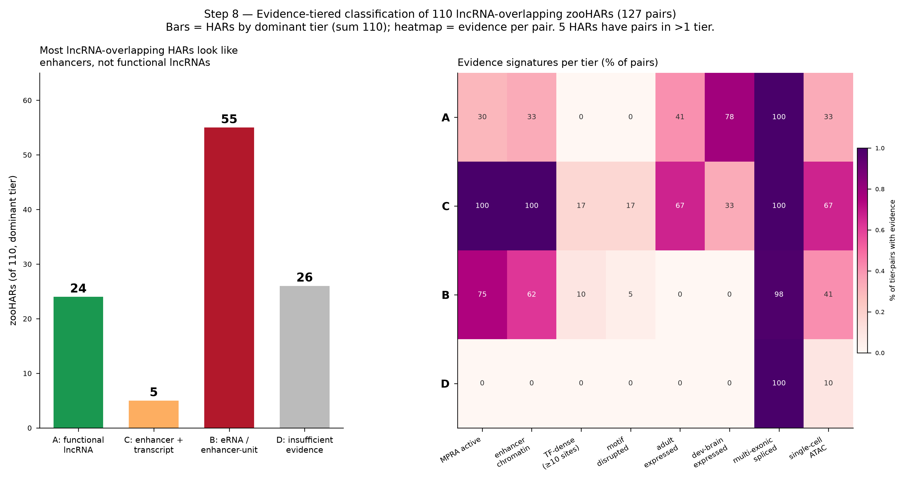
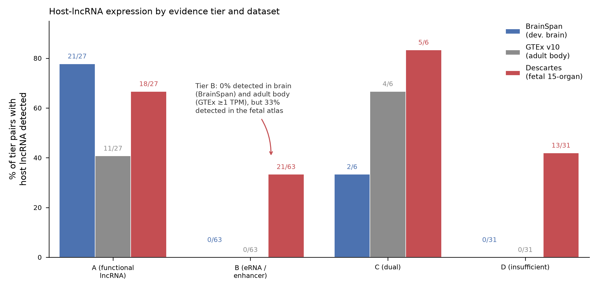
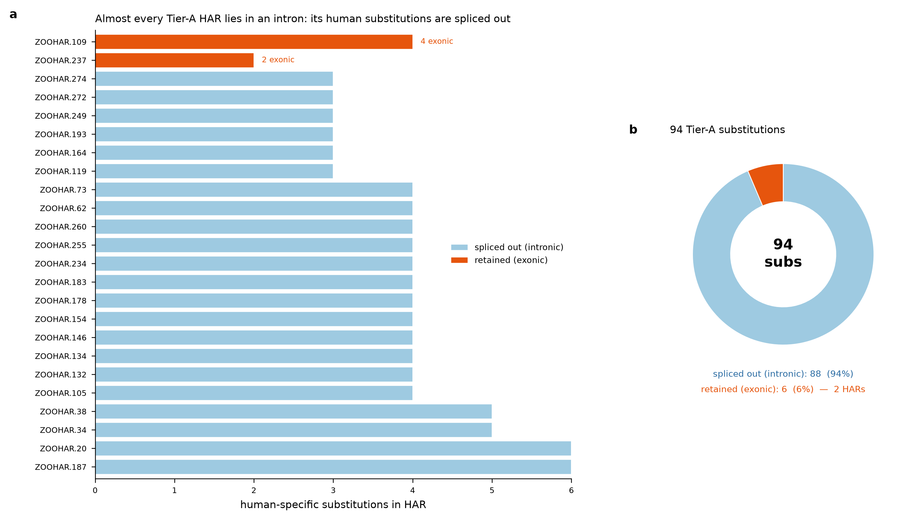

Claude Science — supplement to "Multi-tissue chromatin activity and human-specific transcription-factor binding gains in human accelerated regions" (HAR_manuscript.md)
This supplement develops the classification of the 110 zooHARs that fall inside a GENCODE v50 lncRNA gene (127 HAR–lncRNA pairs, 124 genes). Three analyses are presented: their partition into four evidence tiers (§S1), the developmental and adult expression of their host lncRNAs across brain and body (§S2), and the exon/intron placement of the human-specific substitutions in the functional-lncRNA tier (§S3). Together they establish that within this subset enhancer-unit signatures predominate over functional-lncRNA signatures, and that the associated expression is developmental and multi-tissue rather than brain-exclusive.
The HAR set (312 zooHARs of Keough et al. 2023), genome build (hg38), the multi-tissue accessibility matrix, the human-specific substitution calls (Ensembl EPO primate alignment), and all shared data sources are as described in the main manuscript (HAR_manuscript.md, §2). The analysis-specific procedures for the tiers and the exon/intron mapping are summarised below. The main manuscript's TF-motif affinity re-scoring and gBGC neutrality screen (§3.4 there) use the same substitution calls and scoring method; the three lncRNA-overlapping HARs identified here as carrying a substitution inside a bound motif (§S1) are re-scored by that method and reported in §S1 below.
lncRNA overlap and evidence tiers. The 312 zooHARs were intersected against GENCODE v50 long non-coding RNA gene models (gencode.v50.long_noncoding_RNAs.gtf, 2026-04-08). Each of the resulting 127 HAR–lncRNA pairs (110 HARs, 124 genes) was classified into one of four tiers by combining six evidence types:
Tiers were defined as: A, functional lncRNA (host transcript spliced and expressed beyond the immediate locus, with only weak enhancer-unit evidence); B, eRNA / enhancer-is-the-unit (MPRA-active or TF-dense with active-enhancer chromatin, host expression locus-restricted or absent); C, enhancer plus transcript (both signatures present; dual or ambiguous); and D, insufficient evidence. Where a HAR contributed pairs to more than one tier, it was also assigned a single dominant tier by the priority C > A > B > D.
Human-specific substitutions and exon/intron mapping. Per-base human-specific substitutions were called against the reconstructed human–chimp–bonobo ancestor from the Ensembl EPO primate alignment. For the 24 Tier A HARs (94 substitutions), each substitution's hg38 position was mapped against the full per-isoform exon structure of its host lncRNA in GENCODE v50; a substitution is exonic if it falls in an exon of ≥1 annotated isoform, intronic otherwise.
Of the 312 zooHARs, 110 overlap a GENCODE v50 lncRNA gene (127 HAR–lncRNA pairs, 124 genes). Integrating the six evidence types yields the tier distribution shown in Table S1 and Figure S1, in which enhancer-unit signatures predominate over functional-lncRNA signatures:
Table S1. Evidence-tier classification of the 110 lncRNA-overlapping HARs.
| Tier | Interpretation | HARs (dominant) | Pairs |
|---|---|---|---|
| A | likely functional lncRNA | 24 | 27 |
| B | likely eRNA / enhancer-is-the-unit | 55 | 63 |
| C | enhancer + transcript (dual/ambiguous) | 5 | 6 |
| D | insufficient evidence | 26 | 31 |
(The HAR column assigns each of the 110 HARs to one dominant tier and sums to 110; the Pairs column classifies all 127 pairs independently and sums to 127 — 5 HARs have pairs in more than one tier.)
The supporting evidence types: - Gene structure. 123/124 genes are multi-exonic (median 5 exons), so at the gene level these are spliced transcripts, not classic monoexonic eRNAs — but the HARs sit intronic in 115/127 pairs (9 exonic, 3 at TSS), a median 56 kb from the lncRNA TSS: the signature of an intronic enhancer within a host transcript, where the element and the RNA are separable. - MPRA. 53 of 98 MPRA-tested overlap HARs (54%) drive reporter expression in fetal telencephalon — the same rate as all zooHARs — direct evidence that the HAR sequence is a functional enhancer. - Enhancer chromatin, multi-tissue. Fetal brain is the most common context (55% of overlap HARs), but 58 of 110 HARs carry an active-enhancer signature in ≥1 non-brain tissue (ESC/iPSC 42%, mesenchyme 22%, endoderm 16%, blood 13%); only 23 are brain-exclusive and 29 carry no active mark anywhere. - Single-cell context. 37/110 HARs have CellWalker calls — 24 fetal telencephalon, 19 adult brain, and 1 adult heart (ZOOHAR.182, ventricular cardiomyocyte). - TF binding. The detailed UniBind ChIP-seq motif analysis — intersecting each human-specific substitution with experimentally bound TF motifs — was run, within this lncRNA-overlapping set, on a focus set of 19 HARs prioritised for closer inspection; most carry prior enhancer evidence (16 of the 19 are MPRA-active and 16 carry an active-enhancer mark), though the set also includes a few weaker loci and spans all four evidence tiers. Of these 19, 3 carry a human-specific substitution inside a validated (ChIP-seq-bound) TF motif: ZOOHAR.24 (3 substitutions within NFKB1 and STAT3 sites; 146 bound sites, the densest in the set), ZOOHAR.216 (CDX2), and ZOOHAR.42 (STAT3). These are TFBS-overlap counts; whether each substitution strengthens or weakens binding is not determined by overlap alone, and all three were carried into a per-allele PWM affinity re-score with a gBGC neutrality control in the main manuscript (§3.4), where the ZOOHAR.24 substitutions are shown to create a bound STAT3 site (borderline against the gBGC null), while ZOOHAR.42's bound STAT3 site loses affinity and ZOOHAR.216's substitutions fall in no strong bound motif. (ZOOHAR.167 is not in this set — it lies inside the protein-coding gene ETS1, not a lncRNA gene — and is analysed by the same method in the main manuscript §3.4.)
The per-locus re-scoring results for the three lncRNA-set HARs are as follows. ZOOHAR.24 (chr3, in the lncRNA ENSG00000286856 within TNIK; 5 substitutions, W→S 3 / S→W 1 / S→S 1) is the most substitution-dense HAR in the lncRNA-overlapping set (9.3 substitutions/100 bp; 146 bound UniBind sites) and is most accessible in pancreas (0.58) and adrenal (0.43), MPRA-active. Its substitutions create a bound STAT3 site (−8.4 → +4.1 bits, +12.5) — the largest predicted gain of the three — but the gBGC null is borderline (P = 0.058), so the gain is not clearly distinguishable from neutral GC-biased gene conversion; the earlier overlap-based "disrupted NFKB1/STAT3" annotation is superseded (the change strengthens, not abolishes, binding), and a re-scored HOXA10 effect is negligible (Δ = −0.22). ZOOHAR.42 (chr2, intronic in LINC01798; 6 substitutions, mixed spectrum; top tissue pancreas 0.58) has a substitution inside a bound STAT3 site, but that site loses affinity in the human allele (Δ = −1.6, P = 0.91); a predicted (unbound) NFKB1 motif elsewhere gains affinity, but UniBind does not confirm NFKB1 as bound at this locus, so ZOOHAR.42 is not a bound-motif gain candidate. ZOOHAR.216 (chr2, near FIGN; 4 substitutions; kidney 0.86 but not non-brain-dominant, brain reaching 0.79) carries no substitution inside a strong bound motif: its best CDX2 site (14.64 bits) lies elsewhere in the 748 bp element and is unchanged by the human alleles (Δ = 0.00). None of the three is a significant bound-motif affinity gain.

scroll to zoom · drag to pan · click to enlarge
Figure S1. Evidence-tier classification of the 110 lncRNA-overlapping HARs. Distribution of HARs across the four tiers — A (functional lncRNA), B (eRNA / enhancer-is-the-unit), C (enhancer + transcript), D (insufficient evidence) — together with the six evidence types (gene structure, MPRA, enhancer chromatin, single-cell context, expression, TF-motif disruption) that determine each call. Tier B (enhancer-unit) is the largest class.
Adult GTEx v10 detects only 15 of the 124 host genes (≥1 TPM), mapping to 12 distinct HARs, and skewed to testis. Development changes the picture in two respects, and it is mostly not brain (Table S2): - Developing brain (BrainSpan). Of 62 genes in that annotation, 23 are detected across development (vs 12 in adult body), 8 prenatal-enriched — including RMST, a known SOX2-partner neurogenesis lncRNA. - Fetal 15-organ atlas (Descartes). 76 of 124 genes are annotated and 56 are detected — but only 8 peak in brain; 48 peak in a non-brain organ (kidney, placenta, intestine, adrenal, thymus, heart, muscle).
Combining both developmental sources, 59 of 110 HARs have a developmentally expressed host lncRNA (vs 12 by adult GTEx), and 47 HARs (49 pairs) peak outside the brain. Clear non-brain examples include LINC02055 (placenta), MIR924HG (kidney), LINC01505 (heart) and MIATNB (thymus). A default assignment to "brain lncRNA" would therefore not describe the developmental expression of most of these loci.
Table S2. Host-lncRNA expression by tier and dataset.
| Tier | Pairs | BrainSpan (≥1 RPKM) | GTEx v10 (≥1 TPM) | Descartes (fetal) |
|---|---|---|---|---|
| A | 27 | 21/27 (78%) | 11/27 (41%) | 18/27 (67%) |
| B | 63 | 0/63 | 0/63 | 21/63 (33%) |
| C | 6 | 2/6 | 4/6 | 5/6 |
| D | 31 | 0/31 | 0/31 | 13/31 |
The tier-B "~0% expressed" is correct for the developing brain and adult body — the contexts that decide the eRNA-vs-lncRNA question — while a third of tier-B host transcripts are detectable in the fetal atlas, mostly outside the brain. Annotation lag bounds the zeros: 33/63 tier-B pairs are absent from GTEx v10's annotation and 43/63 from BrainSpan's, so "not detected" there is a conservative floor rather than proven silence.

scroll to zoom · drag to pan · click to enlarge
Figure S2. Host-lncRNA expression by tier and dataset. Fraction of host lncRNAs detected in each of the three expression references — BrainSpan developing brain (≥1 RPKM), GTEx v10 adult body (≥1 TPM), and the Descartes fetal 15-organ atlas — broken down by evidence tier. Tier A hosts are broadly expressed; Tier B hosts are undetected in developing brain and adult body (0/63 each) but a third are detectable in the fetal atlas, mostly outside the brain.
If the Tier A "functional lncRNA" hypothesis were correct, the human-specific substitutions should preferentially land in exonic sequence, where they are retained in the mature RNA. Mapping all 24 Tier A HARs (94 substitutions) against per-isoform exon structure shows the opposite: 22 of 24 Tier A HARs are fully intronic and 94% of substitutions are spliced out of the mature transcript (Figure S3). Only ZOOHAR.109 and ZOOHAR.237 (PTPRD-AS1) place substitutions in exonic sequence, and each only in a single minority isoform. So even in the tier selected for a functional-lncRNA signature, the human-specific changes almost never reach the RNA product — they are positioned as intronic cis-regulatory elements embedded in the host gene, consistent with the intronic-enhancer reading of §S1.

scroll to zoom · drag to pan · click to enlarge
Figure S3. Tier A human-specific substitutions mapped to exon/intron structure. For each of the 24 Tier A ("functional lncRNA") HARs, the 94 human-specific substitutions are classified as exonic (retained in the mature RNA of ≥1 isoform) or intronic (spliced out). 22 of 24 HARs are fully intronic and 94% of substitutions are spliced out; only ZOOHAR.109 and ZOOHAR.237 (PTPRD-AS1) place substitutions in exonic sequence, each in a single minority isoform.
Values were re-derived from the primary per-locus outputs. Key tables underlying this supplement: zooHAR_lncRNA_evidence_tiers.csv (127-pair tier table with per-evidence-type columns), zooHAR_lncRNA_overlap_pairs.csv, and tierA_substitutions_exon_intron.csv. Shared inputs (har_set_hg38.csv, har_tissue_matrix.csv) and full methods are in the main manuscript (HAR_manuscript.md, §2, §5).
Data sources and citations are as listed in the main manuscript (HAR_manuscript.md, §6). The references most directly underlying this supplement are: Keough et al. 2023 (zooHAR catalogue and lentiMPRA); Cao et al. 2020 / Descartes fetal atlas (GSE156793); the GTEx Consortium 2020 (GTEx v10); the BrainSpan Atlas of the Developing Human Brain; Frankish et al. 2021 (GENCODE); Gheorghe et al. 2019 (UniBind); and Castro-Mondragón et al. 2022 (JASPAR).